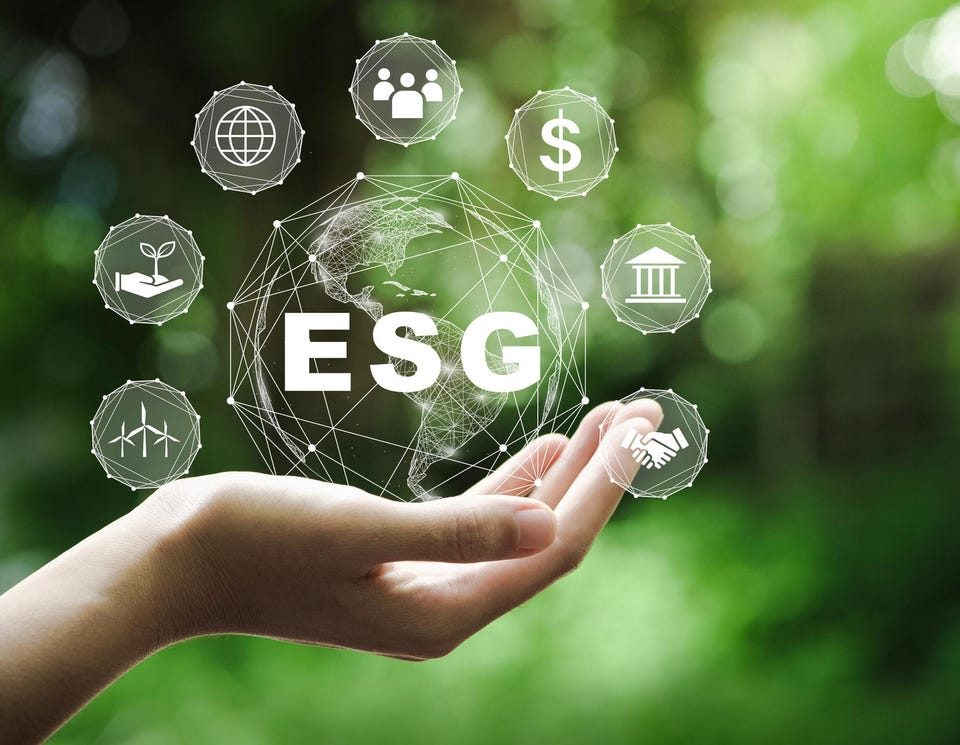

ESG – At the crossroads
Environmental, Social, and Corporate Governance (ESG) are a mainstay in the financial, banking, and investment world today.

With an estimated US$ 39 trillion of financial assets globally under it in 2020 and is considered as one of the fastest-growing segments of the asset management industry, with expectations that it would exceed the value of non-ESG assets by 2024.
The origins of the term ESG can be traced back to 20041, when a UN report2 called for “better inclusion of environmental, social and corporate governance (ESG) in investment decisions”, this happened against the backdrop of many corporate scandals of that era, including Enron, WorldCom, and the Exxon Valdez oil spill.
ESGs, although not a part of the SDGs, are closely aligned with the objective of creating sustainable development. The ESGs which can be related to many of the SDGs, including Climate Action, Gender Equality, Affordable and Clean Energy, Decent Work and Economic Growth, Responsible Consumption and Production, etc., also help to create awareness and an enabling environment in the corporate sphere for SDGs.
The IsDB, has also successfully utilized its own ESG framework, to successfully issue Green-Sukuk in recent years to the market, where they have been not only well received by the investor community but was also able to get a better pricing than some of the previously issued “conventional” Sukuk3.
However, in the recent past the world of ESGs has been rocked by several scandals, such as the German government’s probe of “Greenwashing” allegations against DWS4, a large asset manager, which resulted in the resignation of its CEO. Greenwashing is a process of conveying a false impression or providing misleading information on how one’s products and services, align with ESGs. A similar investigation was also launched by the US Securities and Exchange commission against Goldman Sachs5.
Others working in the investment industry, including a then chief investment officer for sustainable investing at BlackRock, have raised many concerns about how ESG frameworks are employed in the corporate world6, especially as a method to smooth over the actual environmental and social impacts of their investments to make them more palatable to investors, i.e., “marketing hype”.
Furthermore, the war in Ukraine, has raised the question as to what exactly should count as ESG investments? Many defense and hydrocarbon investments previously frowned upon under ESGs, are now being looked upon more favorably, as they viewed as essential to both national and energy security7. In the European region a strong proponent of ESG, there has been an increasing focus and encouragement towards defense and hydrocarbon investments. Similarly, rising energy prices have resulted in ESG champion asset managers like Blackrock and Vanguard, to also realign their investment focus on fossil fuel related industries again.
Another challenge facing ESGs is the lack of a universally acceptable, reliable, and objective framework for rating them. Researchers from MIT and the University of Zurich8 examined the data from six prominent ESG rating agencies and found that the correlations between their assessments are weak (ranging between 0.38 and 0.71), when compared to correlations between credit rating agencies (0.92). Due to this, regulators in many jurisdictions, are now actively working on their scrutiny of ESG claims made by funds9 and ESG rating agencies.
While ESGs continue to play an important role in steering the world towards sustainable development, and addressing climate change, these recent developments and challenges mentioned here have called in to question the credibility of the ESGs. Therefore, urgent action is needed from all ESG stakeholders restore their fast-eroding credibility, as they are still one of the best mechanisms available to us to address these global challenges.
Footnotes
Ingraining sustainability in the next era of ESG investing – Deloitte Insights https://bit.ly/36Y96tP↩︎
Who Cares Wins – Connecting Financial Markets to a Changing World, a joint initiative of Financial Institutions under the auspices of the UN Secretary General https://www.unepfi.org/fileadmin/events/2004/stocks/who_cares_wins_global_compact_2004.pdf↩︎
Islamic Development Bank Issues Largest Sustainability Sukuk Ever https://www.isdb.org/news/islamic-development-bank-issues-largest-sustainability-sukuk-ever↩︎
Blowing the whistle on ESG – Financial Times Podcast https://www.ft.com/content/c313d28b-97e0-4398-8b1e-b71e2bb8d6fa↩︎
SEC investigating Goldman Sachs for ESG claims - Financial Times June 11, 2022 https://www.ft.com/content/5812ab1f-c2d4-4681-a6be-45f0befd92df↩︎
The Secret Diary of a ‘Sustainable Investor’ - https://medium.com/\\\@sosofancy/the-secret-diary-of-a-sustainable-investor-part-1-70b6987fa139↩︎
How ESG investing came to a reckoning – Financial Times June 6, 2022 https://www.ft.com/content/5ec1dfcf-eea3-42af-aea2-19d739ef8a55↩︎
Aggregate Confusion: The Divergence of ESG Ratings – Florian Berg, Julian F Kölbel and Roberto Rigobon https://papers.ssrn.com/sol3/papers.cfm?abstract_id=3438533↩︎
SEC investigating Goldman Sachs for ESG claims, Financial Times June 11, 2022 https://www.ft.com/content/5812ab1f-c2d4-4681-a6be-45f0befd92df↩︎